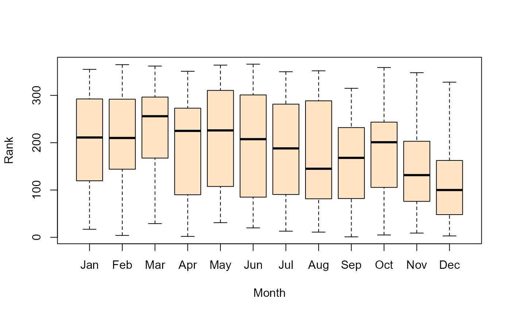

USA 1970 Draft Lottery Data
Draft1970.RdThis data set gives the results of the 1970 US draft lottery, in the form of a data frame.
Usage
data(Draft1970)Format
A data frame with 366 observations on the following 3 variables.
Dayday of the year, 1:366
Rankdraft priority rank of people born on that day
Monthan ordered factor with levels
Jan<Feb... <Dec
Details
The draft lottery was used to determine the order in which eligible men would be called to the Selective Service draft. The days of the year (including February 29) were represented by the numbers 1 through 366 written on slips of paper. The slips were placed in separate plastic capsules that were mixed in a shoebox and then dumped into a deep glass jar. Capsules were drawn from the jar one at a time.
The first number drawn was 258 (September 14), so all registrants with that
birthday were assigned lottery number Rank 1. The second number drawn corresponded to
April 24, and so forth. All men of draft age (born 1944 to 1950) who shared a
birthdate would be called to serve at once. The first 195 birthdates drawn were
later called to serve in the order they were drawn; the last of these was
September 24.
Source
Starr, N. (1997). Nonrandom Risk: The 1970 Draft Lottery, Journal of Statistics Education, v.5, n.2 http://jse.amstat.org/v5n2/datasets.starr.html
References
Fienberg, S. E. (1971), "Randomization and Social Affairs: The 1970 Draft Lottery," Science, 171, 255-261.
Examples
data(Draft1970)
# scatterplot
plot(Rank ~ Day, data=Draft1970)
with(Draft1970, lines(lowess(Day, Rank), col="red", lwd=2))
abline(lm(Rank ~ Day, data=Draft1970), col="blue")
# boxplots
plot(Rank ~ Month, data=Draft1970, col="bisque")

lm(Rank ~ Month, data=Draft1970)
#>
#> Call:
#> lm(formula = Rank ~ Month, data = Draft1970)
#>
#> Coefficients:
#> (Intercept) Month.L Month.Q Month.C Month^4 Month^5
#> 183.528 -84.330 -31.503 5.020 -20.904 -14.052
#> Month^6 Month^7 Month^8 Month^9 Month^10 Month^11
#> 2.122 3.488 21.150 1.747 15.582 1.126
#>
anova(lm(Rank ~ Month, data=Draft1970))
#> Analysis of Variance Table
#>
#> Response: Rank
#> Df Sum Sq Mean Sq F value Pr(>F)
#> Month 11 290507 26410 2.4634 0.00558 **
#> Residuals 354 3795120 10721
#> ---
#> Signif. codes: 0 '***' 0.001 '**' 0.01 '*' 0.05 '.' 0.1 ' ' 1
# make the table version
Draft1970$Risk <- cut(Draft1970$Rank, breaks=3, labels=c("High", "Med", "Low"))
with(Draft1970, table(Month, Risk))
#> Risk
#> Month High Med Low
#> Jan 9 12 10
#> Feb 7 12 10
#> Mar 5 10 16
#> Apr 8 8 14
#> May 9 7 15
#> Jun 11 7 12
#> Jul 12 7 12
#> Aug 13 7 11
#> Sep 10 15 5
#> Oct 9 15 7
#> Nov 12 12 6
#> Dec 17 10 4